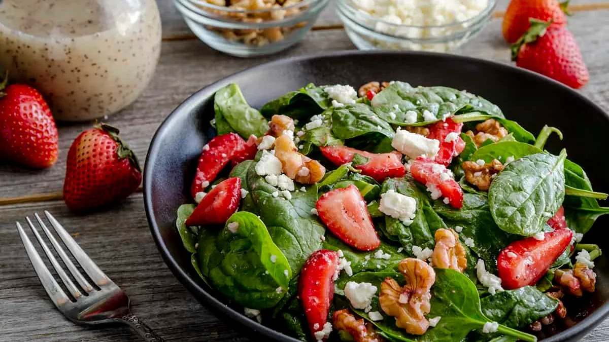
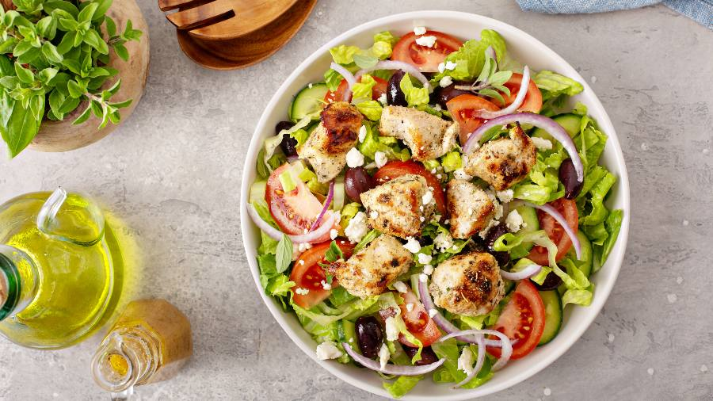
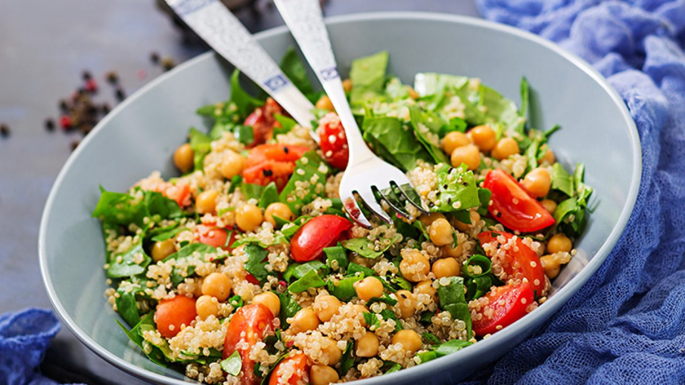

Ensaladas
Ensalada de espinacas, fresas y almendras
Ingredientes:
1. 2 tazas de espinacas frescas.
2. 1 taza de fresas en rodajas.
3. 2 cucharadas de almendras laminadas.
4. 50 g de queso de cabra desmenuzado (opcional).
5. 2 cucharadas de aceite de oliva.
6. 1 cucharada de vinagre balsámico.
7. 1 cucharadita de miel (opcional).
8. 1 cucharada de vinagre balsámico.
Preparación:
1. Lava las espinacas y las fresas, y colócalas en un bowl.
2. Añade las almendras laminadas y el queso de cabra.
3. Mezcla el aceite de oliva, el vinagre balsámico y la miel en un recipiente aparte.
4. Rocía el aderezo sobre la ensalada y mezcla suavemente antes de servir.
Ensalada de pollo, vegetales y tomates cherry
Ingredientes:
1. 1 pechuga de pollo a la parrilla, cortada en tiras.
2. 2 tazas de lechuga romana.
3. 1/2 taza de tomates cherry partidos a la mitad.
4. 1/4 taza de aceitunas negras.
5. 1/4 taza de queso feta en cubos.
6. 2 cucharadas de aceite de oliva.
7. Jugo de 1/2 limón.
8. 1/2 cucharadita de orégano.
9. Sal y pimienta al gusto.
Preparación:
1. Lava la lechuga y los tomates, y colócalos en un bowl grande.
2. Agrega el pollo, las aceitunas y el queso feta.
3. Mezcla el aceite de oliva, el jugo de limón, el orégano, la sal y la pimienta.
4. Vierte el aderezo sobre la ensalada, mezcla bien y sirve.
Ensalada de quinoa, garbanzos y aguacate
Ingredientes:
1. 1 taza de quinoa cocida.
2. 1/2 taza de garbanzos cocidos.
3. 1 aguacate en cubos.
4. 1/2 pepino en rodajas.
5. 1/4 de cebolla morada en tiras finas.
6. Jugo de 1 limón.
7. 2 cucharadas de aceite de oliva.
8. Sal y pimienta al gusto.
Preparación:
1. Cocina la quinoa según las instrucciones del paquete y déjala enfriar.
2. En un bowl, mezcla la quinoa, los garbanzos, el aguacate, el pepino y la cebolla morada.
3. En un recipiente aparte, combina el jugo de limón, el aceite de oliva, la sal y la pimienta.
4. Vierte el aderezo sobre la ensalada, mezcla y sirve.